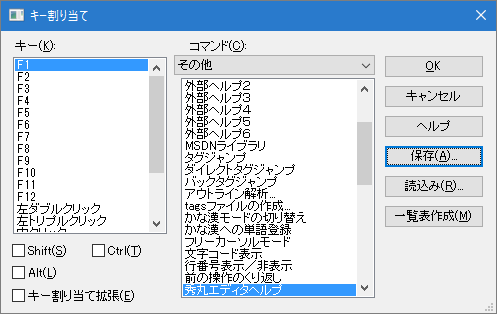
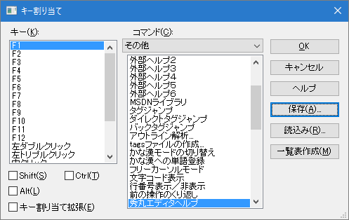

- 複数パソコンで、同一のキー割り当てを使用したいのですが、１台ごとに設定すると大変です。便利な方法はないですか？

まず１台のパソコンのキー割り当てを行います。その内容を他のパソコンに読み込ませる事が出来ます。
手順は以下になります。
最初にキー割り当てを設定したパソコンで、「その他」→「キー割り当て」の「保存」ボタンを使用してKEYファイルを作ります。 （拡張子が「key」のファイルです。名前はmybind.keyとかmey970101.keyなど自由に指定できます）
デフォルトでは「設定フォルダ」に保存されます。秀丸エディタ Ver.8.90以降の場合 (Ver.8.90〜)

秀丸エディタ Ver.8.90より前の場合 (〜Ver.8.89)
 

キー割り当てを同じにしたいパソコンにインストールされている秀丸エディタで、「設定フォルダ」位置を確認する。
(1)で保存したKEYファイルを、(2)で確認した「設定フォルダ」へコピー後、 「その他」→「キー割り当て」の「読込み」ボタンで、読み込めば、 キー割り当てを同じにすることが出来ます。
キー割り当て以外の各種設定を含めて移行したい場合は、 [HME0078A]●各種設定を移行するためファイルに保存したいを参照してください。